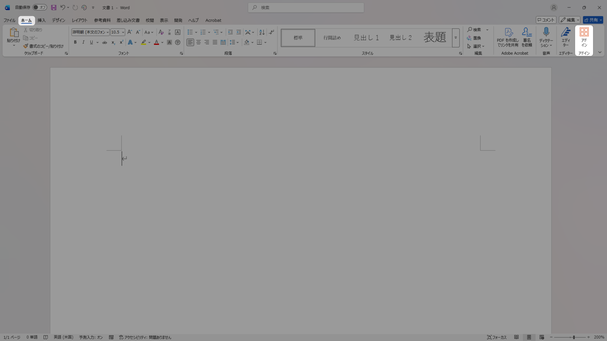
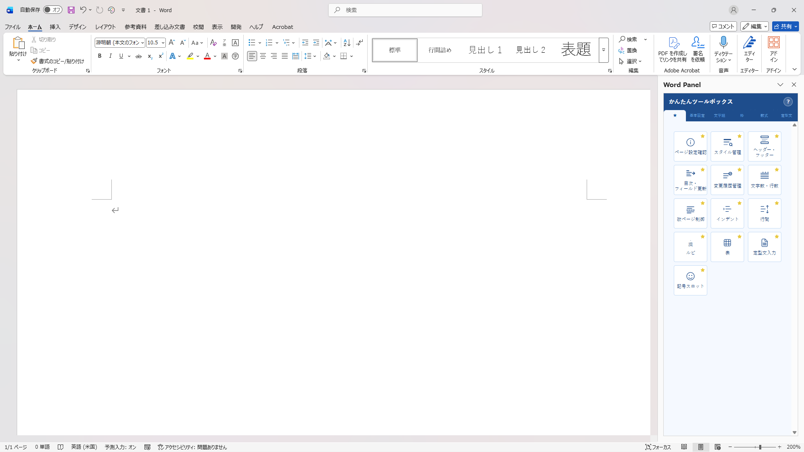
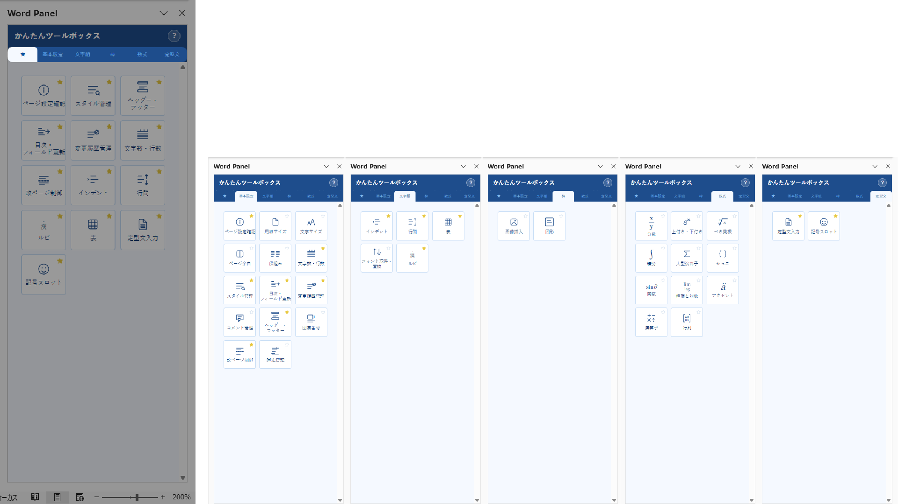

アドインの概要
かんたんツールボックス for Word は、Microsoft Word のタスクパネルに組み込まれるアドインです。 フォント・段落・数式・表など、日常的な書式設定操作をひとつのパネルから素早く実行できます。
- フォントの一括変換・サイズ変更
- 段落スタイル・行間・インデントの調整
- 数式（分数・積分・行列・根号など）の挿入
- 表の自動整形
- よく使う機能をお気に入りに登録
動作環境
| 対応アプリ | Microsoft Word |
|---|---|
| 対応 OS | Windows 10 / 11 |
| 対応プラン | Microsoft 365（旧 Office 365）以降 |
| 必要 API バージョン | Word JavaScript API 1.3 以上 |
| インターネット接続 | 必要 |
※ Mac 版 Word・Word Online・Word for iPad には対応していません。
基本的な使い方
1. アドインを開く
Word のリボンから ホーム タブ（または 挿入 タブ）内の「かんたんツールボックス」ボタンをクリックすると、画面右側にタスクパネルが表示されます。


2. 機能カードを選択する
パネル上部のカテゴリ（お気に入り・基本設定・文字組・枠・数式・定型文）をクリックして、目的の機能カードを選択します。

3. 操作を実行する
各カード内のボタンやスライダーを操作すると、Word ドキュメントに即座に反映されます。操作前にテキストや表を選択しておくと、選択範囲に対して書式が適用されます。

各機能の説明
お気に入り
よく使う機能カードを「お気に入り」タブに追加することで、毎回カテゴリを探す手間を省けます。カード右上の ★ アイコンをクリックして登録してください。

基本設定
（説明を後ほど追記）
文字組
（説明を後ほど追記）
枠
（説明を後ほど追記）
数式
（説明を後ほど追記）
定型文
（説明を後ほど追記）
バージョン履歴
| バージョン | リリース日 | 主な変更内容 |
|---|---|---|
| 1.0.0 | 2026年4月 | 初回リリース |
お問い合わせ
ご質問・不具合のご報告は、下記の問い合わせフォームよりお送りください。
株式会社明友社 お問い合わせフォーム
https://meiyusha.co.jp/index.html#contact
※ お問い合わせへの返答には数営業日いただく場合があります。